| Seleccione la opción sobre la que necesita ayuda |
| Historial |
| Borrar Forma |
| Nueva Versión |
| Editar Forma |
| Solicitud de Servicios |
| Historial |
| Duplicar |
| Guía |
| Rastrear Guía |
| Anular |
| Asignar |
| Apoyo al usuario |
| Historial |
| Editar |
 Para que los cambios sean realizados en el archivo usted deberá hacer clic en el icono Cerrar al finalizar los procedimientos en la ventana Detalle de Comunicación.
Para que los cambios sean realizados en el archivo usted deberá hacer clic en el icono Cerrar al finalizar los procedimientos en la ventana Detalle de Comunicación.

| Comunicaciones Detalle de Servicios |
Detalle de Servicios le guiará paso a paso en la ejecución de las diferentes opciones que aparecen en el detalle del servicio de cada uno de los Módulos de Servicios.
 Historial (Formas y procedimientos)
Historial (Formas y procedimientos)
 Permite ver los cambios que ha sufrido un formato o procedimiento que se encuentran en el sistema SIMAD.
Permite ver los cambios que ha sufrido un formato o procedimiento que se encuentran en el sistema SIMAD.
Para ver el historial de una forma o procedimiento realice los siguientes pasos:
- Haga clic en el icono Historial.
 Opciones lista historial
Opciones lista historial
- Regresar: Se utiliza para regresar a la pagina en la que se encontraba anteriormente.
- Exportar: Se utiliza para enviar la lista de formatos y procedimientos a una hoja de Excel para ser impresos.
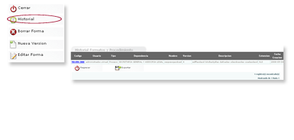
 -Haga clic en el código del procedimiento o formato para ver los detalles de este.
-Haga clic en el código del procedimiento o formato para ver los detalles de este.
 Permite eliminar Formatos o procedimientos del sistema SIMAD 4.0.
Permite eliminar Formatos o procedimientos del sistema SIMAD 4.0.
Para eliminar un Formato o Procedimiento realice los siguientes pasos:
- Haga clic en el icono Borrar Forma.
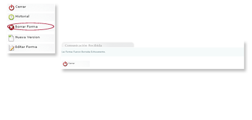
 - El sistema mostrara que la forma o unidad documental fue borrada exitosamente.
- El sistema mostrara que la forma o unidad documental fue borrada exitosamente.
- Haga clic en cerrar para finalizar.
 Permite agregar o hacer a un procedimiento o formato ya creado nuevos cambios y guardar una nueva versión.
Permite agregar o hacer a un procedimiento o formato ya creado nuevos cambios y guardar una nueva versión.
Para crear una nueva versión de un formato o procedimiento realice los siguientes pasos:
- Haga clic en el icono Nueva Versión.
- Modifique los datos que estime necesarios.
- Haga clic en Guardar Forma.
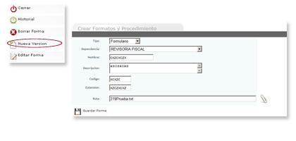
 - El sistema guardará los nuevos cambios como una nueva versión de la forma o procedimiento que podrán ser consultadas en Historial.
- El sistema guardará los nuevos cambios como una nueva versión de la forma o procedimiento que podrán ser consultadas en Historial.
 Permite realizar cambios a un procedimiento o formato ya creado.
Permite realizar cambios a un procedimiento o formato ya creado.
Para realizar una modificación a un formato o procedimiento realice los siguientes pasos:
- Haga clic en el icono Editar Forma.
- Haga clic o edite donde desea realizar los cambios
- Haga clic en Guardar.
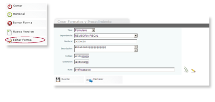
 - Al guardar el sistema lo enviara de nuevo al detalle de la documentación.
- Al guardar el sistema lo enviara de nuevo al detalle de la documentación.
 Historial (Solicitud de Servicio)
Historial (Solicitud de Servicio)
 Permite ver los cambios que ha sufrido una solicitud de Servicio.
Permite ver los cambios que ha sufrido una solicitud de Servicio.
Para ver el historial de una Solicitud de Servicio realice los siguientes pasos:
- Haga clic en el icono Historial.
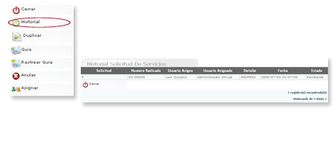
 -Haga clic en Cerrar para finalizar.
-Haga clic en Cerrar para finalizar.
 Permite crear una nueva solicitud de servicios, basándose en una solicitud ya creada y cambiando sólo la entidad de destino a quien va a ser dirigida.
Permite crear una nueva solicitud de servicios, basándose en una solicitud ya creada y cambiando sólo la entidad de destino a quien va a ser dirigida.
Para Duplicar una solicitud de Servicio realice los siguientes pasos:
- Haga clic en el icono Duplicar.
- Haga clic en Guardar Solicitud.
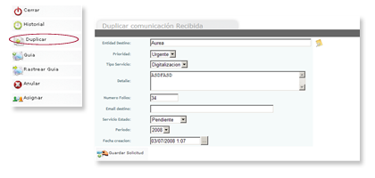
 - El sistema mostrará de nuevo el detalle de la solicitud.
- El sistema mostrará de nuevo el detalle de la solicitud.
- Si desea duplicar esta solicitud a otros destinatarios haga clic en el icono enviar otros destinos y seleccione la entidad o usuario a quien desea enviar la solicitud.
Haga clic en guardar destino para guardar la solicitud de servicios que usted duplico.
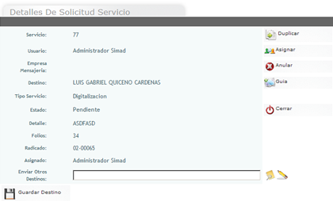
 Permite registrar el número de guía de la solicitud de servicios la cual fue enviada por correo físico.
Permite registrar el número de guía de la solicitud de servicios la cual fue enviada por correo físico.
Para crear la guía de una solicitud realice los siguientes pasos:
- Haga clic en el icono Guía.
- Digite los datos de la empresa de mensajería.
- Haga clic en Enviar.
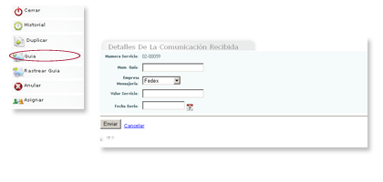
 - Si desea anular la guía haga clic en Cancelar.
- Si desea anular la guía haga clic en Cancelar.
 Permite hacer un seguimiento de su envío a través de la página web del proveedor de servicio de mensajería.
Permite hacer un seguimiento de su envío a través de la página web del proveedor de servicio de mensajería.
Para hacer un Rastreo de la guía realice los siguientes pasos:
- Haga clic en el icono Rastrear Guía.
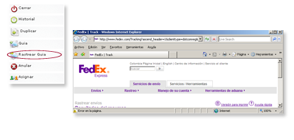
 Elimina la solicitud de servicio que el usuario ya no necesita.
Elimina la solicitud de servicio que el usuario ya no necesita.
Para anular una solicitud de servicio realice los siguientes pasos:
- Haga clic en el icono Anular.
- Digite los datos de la empresa de mensajería.
- Haga clic en Enviar.
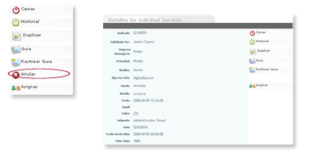
 - El sistema automáticamente anulará la solicitud y desaparecerá en el detalle el botón Anular.
- El sistema automáticamente anulará la solicitud y desaparecerá en el detalle el botón Anular.
 Permite asignar una solicitud de servicios a otro usuario.
Permite asignar una solicitud de servicios a otro usuario.
Para asignar una solicitud de servicio realice los siguientes pasos:
- Haga clic en el icono Asignar.
- Haga clic en Asignar a:, y seleccione un usuario.
- Digite Observaciones si las tiene.
- Haga clic en Asignar.
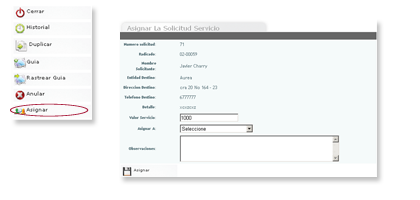
 - El sistema mostrará que la solicitud de servicios fue asignada al usuario que usted seleccionó.
- El sistema mostrará que la solicitud de servicios fue asignada al usuario que usted seleccionó.
 Permite ver el proceso que ha tenido una queja o reclamo en el sistema SIMAD.
Permite ver el proceso que ha tenido una queja o reclamo en el sistema SIMAD.
Para ver el historial de PQR realice los siguientes pasos:
- Haga clic en el icono Historial.
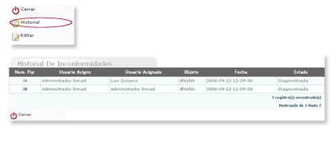
 - Haga clic en Cerrar para finalizar.
- Haga clic en Cerrar para finalizar.
 Permite realizar cambios a las PQR ya creadas en SIMAD.
Permite realizar cambios a las PQR ya creadas en SIMAD.
Para Editar un PQR realice los siguientes pasos:
- Haga clic en el icono Editar.
- Haga clic en Estado y seleccione una opción.
- Haga clic en reasignar y seleccione un usuario.
- Haga clic en Guardar.
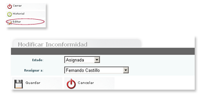
 - Los usuarios con permisos pueden realizar modificaciones a las inconformidades creadas.
- Los usuarios con permisos pueden realizar modificaciones a las inconformidades creadas.